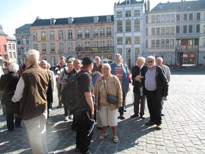
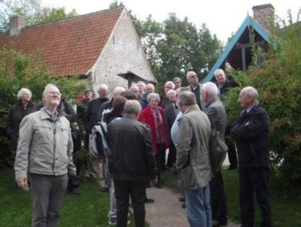
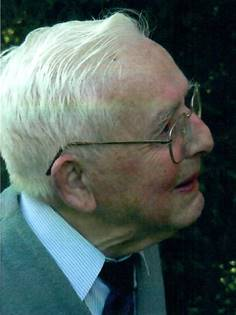
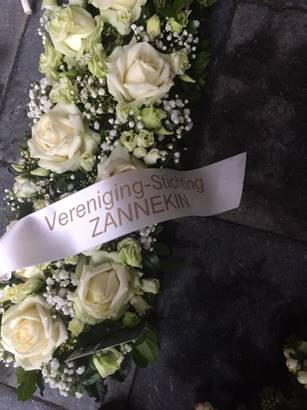

> nieuwsbrief
> 39 jg. - 1e trimester 2021
Hernieuwen
ledenbijdrage voor 2021
De jaarwisseling
komt er aan – en meteen ook het tijdstip voor het hernieuwen van
de bijdragen voor 2021. De minimumbijdrage is voorlopig € 29,00.
Vanaf het bedrag van 35 € boeken we u met dank als steunend lid.
Vereffening graag via onze rekening IBAN: BE13 4648 2202 5139 –
BIC: KREDBEBB t.n.v. Vereniging/Stichting, p/a Edouard
Michielsstraat 51, B.1180 Ukkel, zijnde het nieuwe
secretariaatsadres vanaf 1 januari 2021.
Doorheen de jaren hadden
we al ruim honderd e-postadressen van leden kunnen opslaan.
Helaas is een computercrash er de oorzaak van dat die info
verloren gegaan is. Mogen we iedereen die over een e-adres
beschikt vragen om ons dit toe te sturen op ons
administratie-adres leo.camerlynck@skynet.be
. Dit zou het ons de gelegenheid bieden om deze leden sneller
en gerichter te informeren dan tot nog toe mogelijk was.
2020 was een rampjaar op veel vlakken.
Niet meer normaal kunnen bewegen, constant opletten om niet
besmet te raken, de fysieke aanwezigheid van familieleden,
vrienden en kennissen missen, de dreigende cijfers, de
wereldomvattende pandemie.
De economie lijdt er onder, het sociale
leven nog meer en om dan nog maar te zwijgen over de culturele
sector. Verenigingen lijden hier ook onder, en onze dierbare
Stichting Zannekin ontsnapte evenmin aan de dans. Onze geplande
activiteiten konden niet doorgaan maar het Jaarboek en de
Nieuwsbrieven bleven overeind.
Onze secretaris-penningmeester Maurits
Cailliau, die al een halve eeuw het Zannekin-schip varend hield,
blijft bestuurslid maar legt zijn functies neer, die hij als
niemand anders op vlekkeloze wijze heeft volbracht. Ook nam hij
sinds jaren de functie van eindredacteur waar. Weinigen zullen
het hem nadoen, dat is zeker. Op 82-jarige leeftijd is het
begrijpelijke dat hij het even rustiger aan wil doen. Zie ook
elders in deze Nieuwsbrief.
Herschikking
Dit betekent wel een herschikking aan de
top van de vereniging. Het eindredacteurschap van het jaarboek
komt voortaan in handen van Wim van Heugten, die die taak reeds
mocht verzorgen een aantal decennia terug. Ikzelf zal naast het
voorzitterschap eveneens ad interim de functie van secretaris
waarnemen. Samen met Wim van Heugten ga ik de
verenigingsfinanciën beheren. Het wordt een niet te
onderschatten klus, die in afwachting dat de bestuurstaken
opnieuw worden verdeeld, een zekere afslanking van de
activiteiten noodgedwongen moet inhouden.
Vanuit zowel Nederland als Vlaanderen
moet er niet te veel steun van de overheid verwacht worden,
minder dan ooit tevoren overigens. Niet voor niets schreven
oud-journalist Frans Crols en éminence grise Jozef Deleu dat van
degene die het allemaal anders zouden aanpakken, mochten ze eens
aan het roer staan, niets te merken valt nu ze het effectief
voor het zeggen (kunnen/mogen) hebben. Onze geschiedenis
mogen wij zelfs niet meer beleven zoals het hoort als je
bijvoorbeeld verneemt dat Amsterdams burgermeesteres Femke
Halsema verbiedt om de 17e eeuw nog als de Gouden Eeuw te
omschrijven. Komt daarbij nog een bureaucratie kijken, bevolkt
door ambtenaren, mannelijk en vrouwelijk, die kennis noch
voeling hebben met onze dierbare cultuur van de Lage Landen bij
de Noordzee. Het gaat zelfs zo ver dat zij bepalen welke
richtingen wij moeten inslaan om steun te genieten. In de
cultuursector in zowel de Noordelijke als Zuidelijke Nederlanden
zou een bijsturing geen overdreven luxe zijn.
De coronacrisis heeft het geheel niet
echt vooruitgeholpen. Wanneer er te besparen valt, is de
cultuursector de eerste om onder het mes van de bezuinigingen te
vallen.
Concreet
Nu concreet. Vanaf 2021 legt de Stichting
Zannekin de nadruk op het Jaarboek, dat, al mogen wij zelf met
enige trots beweren, een bijzondere positie inneemt tussen de
historische boeken en publicaties over de Nederlanden. En dat is
ook zo, als wij zien dat ze in de bibliotheekschabben in menig
universiteiten over de hele wereld een eerbare plaats krijgen.
Voorts zal het Jaarboek elk jaar
voorgesteld worden tijdens een studiedag op een locatie in de
Nederlanden Extra Muros. In 2021 wordt dit hoogstwaarschijnlijk
Rijsel, doch hierover verneemt u later meer. Een bezoek aan de
hoofdstad van Frans-Vlaanderen is uiteraard gepland.
Het jaar 2021 wordt beschouwd als een
overgangsjaar. Aangegane verplichtingen rond de studiedag in
Frans-Vlaanderen en Rijsel zullen zoveel mogelijk worden
nagekomen, uiteraard rekening houdend met de coronamaatregelen
van de overheid.
Voorlopig vervallen toekomstige
studie-uitstappen. Wel blijft Zannekin contactpersoon voor de
meerdaagse reizen met Belltours. In 2021 is dit een meerdaagse
reis naar Normandië in het voetspoor van Mathilde van Vlaanderen
en François 1er. En een andere meerdaagse reis gaat richting
Noord-Duitsland, Denemarken en Zuid-Zweden in de
Vlaams-Nederlandse sporen. Althans ook hier rekening houdend met
de coronacrisis uiteraard.
Digitaal
Door gebrek aan mankracht voor zowel
inhoud als de feitelijke productie en verzending dienen we
helaas afscheid te nemen van de papieren Nieuwsbrief. In
de plaats ervan komt een digitale versie met gerichte
aankondigingen van activiteiten rond het Jaarboek en eventuele
andere ad-hoc-activiteiten.
Voor toezending van de digitale Nieuwsbrief
is het echter wel noodzakelijk dat naast het postadres (t.b.v.
toezenden van het Jaarboek) de Zannekin-administratie ook over
uw emailadres kan beschikken. Gelukkig beschikken we al over
veel emailadressen maar we doen een dringende oproep uw
email-adres zo spoedig mogelijke nogmaals door te geven.
Wie niet over een e-mailadres beschikt
krijgt de eerste berichten nog via de post bezorgd.
Deze herschikking dient zich voor de
komende zomer te voltrekken, het liefst vóór 1 juli 2021. In bijzondere gevallen
kan een bijzondere regeling getroffen worden.
De webstek blijft bestaan. Dat is een
noodzakelijk instrument dat in de toekomstige werking past.
Wij hopen dat u begrip opbrengt voor deze
noodzakelijke ingrepen, doch wij willen in de eerste plaats
ervoor zorgen dat ons dierbaar Zannekin blijft bestaan.
Wij wensen aan iedereen een fijn en
hartelijk 2021 en vooral ….. blijf gezond.
Leo CAMERLYNCK
Voorzitter
KORT SAMENGEVAT
De Stichting Zannekin:
- blijft elk jaar een Jaarboek
uitgeven;
- houdt u regelmatig op de hoogte via
een digitale nieuwsbrief met nuttige informatie;
- organiseert jaarlijks een
ontmoetingsdag in een plaats ‘extra muros’ met voorstelling
van het nieuwste jaarboek gevolgd door een culturele dag met
een lezing en een rondleiding;
- onderhoudt regelmatig de webstek;
- blijft medeorganisator van meerdaagse
reizen naar gebieden met sporen uit de Nederlanden;
- blijft acties steunen zoals het
plaatsen van Nederlandstalige borden op bezienswaardige
plaatsen “extra muros”;
- geeft regelmatig publicaties uit over
een onderwerp “extra muros”.
Gelieve uw e-post mede te delen aan leo.camerlynck@skynet.be
Zannekin op
bezoek in Bergen (Mons)
Een zonovergoten dag in de Henegouwse
hoofdstad lokte heel wat belangstellenden uit het noorden en het
zuiden van de Nederlanden. De Franse schrijver Victor Hugo op
doorreis door deze mooie historische stad schreef dat hij zich
thuis voelde in “la Flandre”. De stad van Roland de Lattre en
Jacques du Broeucq verrijkte de Nederlanden op gebied van muziek
en architectuur

Zannekin
bezoekt het openluchtmuseum
te Villeneuve-d’Ascq / Rijsel

Een fijne
dag in een uniek kader lokte ruim honderd belangstellenden uit
Noord en Zuid met interessante lezingen en een kennismaking
het landelijke Vlaanderen. Ook kwam men van heinde en verre
naar de Franse Nederlanden.
Dit zijn slechts twee voorbeelden uit de
talrijke geslaagde vele Studie-uitstappen en Ontmoetingsdagen
uit de voorbije decennia. Beide activiteiten dienden in 2020
geschrapt te worden tengevolge van de Covid
19-verbodsbepalingen.
Maar ooit komen er weer betere tijden!
ZANNEKIN, een
Heel-Nederlands genootschap
De
vereniging/stichting Zannekin
richt de aandacht op de grensgebieden in Noord-Frankrijk en
West-Duitsland, w.o. Frans-Vlaanderen, Artesië, Picardië,
Oost-Friesland, het Eemsland, Lingen, Bentheim,
West-Munsterland, Kleef, de Gelderse gebieden tussen Maas en
Rijn, Gulik, de Limburgse gebieden bij Aken, en de Luxemburgse
gebieden.
Sommige
van deze gebieden, die als een krans om de historische
Nederlanden liggen, hebben ooit tot enig Nederlands
staatsverband gehoord, of er nauw mee verbonden waren,
andere hebben op economisch of cultureel gebied nauwe
contacten gehad en weer andere, en dat zijn dan naast
Frans-Vlaanderen vooral de Duitse grensgebieden, waren tot voor
een paar generaties nog Nederlandstalig. Al deze landstreken
hebben samen met Friesland en het Walenland een onmiskenbare
bijdrage geleverd aan het culturele erfgoed en de eigenheid
van de Nederlanden.
Zannekin stelt zich tot
doel om de historische en de culturele banden met al deze, van
ons vervreemde gebieden nader te onderzoeken, weer aan te halen
en waar nodig te hernieuwen. Als belangrijkste taak ziet Zannekin het om de
belangstelling voor deze gebieden te wekken en tevens het besef
te laten herleven dat de huidige grenzen alleen maar een
politiek karakter hebben: ze doorsnijden een economische,
culturele en historische eenheid.
Deze
belangstelling kan in de toekomst de basis vormen om binnen het
historische kader en met respect voor de christelijk
humanistische grondslagen van de cultuur van de Nederlanden, te
komen tot een nauwere samenwerking met deze gewesten "extra
muros". Hiertoe zijn binnen het huidige streven naar een
verenigd Europa reële mogelijkheden aanwezig. Binnen het
omschreven gebied wordt ook aandacht besteed aan de inheemse
taalminderheden.
Waarin
onderscheidt Zannekin
zich van andere gelijkgezinde genootschappen?
Er bestaan verenigingen, verbonden en
andere genootschappen, die op een of andere wijze de bevordering
van de relaties tussen Nederland en Vlaanderen hoog in het
vaandel dragen.
We denken aan het Algemeen Nederlands
Verbond, de Orde van den Prince, de Marnixring, de BENEV, Ons
Erfdeel - De Lage Landen, en andere al dan niet plaatselijke
grensoverschrijdende initiatieven.
De meerwaarde van Zannekin ligt in de
belangstelling voor de gebieden “extra muros” daar waar de hier
voren aangehaalde verenigingen zich grotendeels focussen op
nauwe contacten tussen Nederland en Vlaanderen.
Zo houdt het belangstellingsveld niet op
aan de Frans-Nederlandse taalgrens in België, of aan de
staatsgrenzen van België met Frankrijk, Luxemburg en Duitsland,
alsmede van Nederland en Duitsland.
Het ledenbestand bestaat ook uit
belangstellenden uit het kernland en de randgebieden. De
geïnteresseerden uit al deze gebieden nemen ook regelmatig deel
aan de activiteiten, die meestal plaatshebben in een randgebied.
Daarin mag Zannekin wel
als toonaangevend worden beschouwd.
Interesse voor gebieden waar de
Nederlandse cultuur duidelijk aanwezig is, behoort ook tot
Zannekins belangstellingsveld. Ook daar wil Zannekin de rijke
cultuur der Nederlanden in de kijker stellen.
Kortom, Zannekin ziet het ruim.
Tastbare getuigen van Zannekin
Zannekin heeft altijd
een tastbare stempel willen drukken in de randgebieden, niet
alleen door haar jaarboeken, nieuwsbrieven en overige
publicaties alsook door de ontmoetingsdagen en studiereizen.
Onze aanwezigheid in
Frans-Vlaanderen en Duitsland van Oost-Friesland tot Bitburg,
van Doornik tot Luxemburg, in Brussel, Amsterdam, Leiden,
Ravenstein, en elders zijn nooit onopgemerkt voorbijgegaan.
Maar er is meer. Op het
graf van de E.H. Jean-Marie Gantois te Watten ligt een steen
gehouwen door Willem Vermandere. In samenwerking met de vzw
EUVO, herinneren borden aan de heilige Mildreda te Millam, aan
de heilige Godelieve te Heimfriedswilder, aan Petrus Dathenus en
Nicasius Ellebodius te Cassel. Onze geschiedenis en taal worden
er in de kijker gesteld.
Zannekin als
familienaam
Voor wie dacht dat de familienaam Zannekin uitgedoofd was
na de bloedige slag bij Cassel in 1328 heeft het verkeerd voor.
De familienaam wordt anno 2020 wel degelijk nog gedragen naar
rato van 44 personen in Frankrijk, 29 in België, 2 in Canada en
1 in de USA.
In Rubrouck (Frans-Vlaanderen) en in
Groot-Ieper duikt hij nog het vaakst op. De familienaam wordt
ook nog als Zannequin
gespeld. Het
wapenschild is voor allen de rode vos op een hermelijnenveld.
De
Nederlanden ‘Extra Muros’ en ook een eindje verder met Zannekin
De Stichting Zannekin is de énige
vereniging die de schijnwerpers richt op de gebieden buiten
Rijksnederland en de deelstaat Vlaanderen. Deze bevinden in
Noord-Frankrijk, West-Duitsland, Luxemburg en het Walenland.
Al een aantal jaren organiseert Zannekin
ook meerdaagse reizen naar gebieden, die wat verder liggen dan
de randgebieden doch waar veel sporen uit de Nederlanden
duidelijk aanwezig zijn.
Een eerste meerdaagse reis ging richting
Boergondië, waar de geschiedenis, kunst en cultuur uit
Vlaanderen en de overige Nederlanden op menig plaatsen zichtbaar
aanwezig zijn. Dit is ongetwijfeld het geval in Beaune, Dijon,
Tournus, Autun en andere bekende plaatsen.
In het spoor van Willem de Zwijger ging
een meerdaagse reis naar Dillenburg, Nassau, Luxemburg.
In het spoor van de Remonstranten, van
“Min Moêderspraak” en van de Verdragen van Westfalen (1648) ging
de meerdaagse naar Münster, Friedrichstadt, Heide, Lübeck,
Bremen, Osnabrück.
Architectuur, Mennonieten,
landbouwontwikkeling brachten ons naar Potsdam en Berlijn in
Duitsland, en Gdańsk/Danzig, Elbląg/Elbing, Pasłęk/Stedeken
Holland, Frombork/Frauenburg, Toruń/Thorn in Polen.
Taal, architectuur, humanisme uit de
Nederlanden leidden ons naar Wrocław/Breslau, Kraków/Krakau,
Wilamowice, Olomouc/Ollmütz, Praag, Nürnberg.
Gelet op het succes van deze meerdaagse
reizen worden in 2021, voor zo ver de coronacrisis is gaan liggen is, ook twee meerdaagse
reizen op touw gezet. Één naar Normandië en Picardië en een
andere naar Denemarken en Zuid-Zweden, uiteraard in de
Nederlandse voetsporen.
Wij houden u graag op de hoogte.
Het ligt in de bedoeling dat de
drieënveertigste editie van het Jaarboek Extra Muros in het
voorjaar 2021 verschijnt. Zoals elders in deze Nieuwsbrief wordt
gemeld, ligt het eveneens in de bedoeling dat Jaarboek nr 43
gepresenteerd gaat worden tijdens een studiedag op een nog te
bepalen datum te Rijsel. Terwijl het verschijnen van het
Jaarboek nagenoeg zeker is, kan dat nog niet gezegd worden over
deze samenkomst. Dat hangt vooral af van de overheidsmaatregelen
rond de bestrijding van het coronavirus.
Het eerst Jaarboek Zannekin verscheen in 1977.
De twee daaropvolgende Jaarboeken verschenen onregelmatig. Maar
met deze nrs 2 en 3 werd wel duidelijk dat het Jaarboek
levensvatbaar was en dat er voldoende aanbod van artikelen was
om tot een jaarlijkse publicatie over te gaan. Vanaf 1982, te
beginnen met jaargang 4 verscheen het Jaarboek ieder jaar met
het intussen vertrouwde uiterlijk en vormgeving.
In de loop der jaren heeft het Jaarboek zijn
bestaansrecht meer dan bewezen. Wie de intussen 43 jaargangen
doorbladert ziet een bijzonder reeks van onderwerpen langskomen
die op eender welke manier te maken hebben met de verbondenheid
van een krans van gebieden met de histo-rische Nederlanden. Met
andere woorden: die ooit behoorden tot het unieke
cultuurlandschap van de Nederlanden. In de vele gespreken
die inde afgelopen jaren binnen en buiten het bestuur werden
gevoerd, is duidelijk geworden dat het Jaarboek het best het
gedachtengoed van Zannekin tot uitdrukking brengt. Vandaar dat
gekozen werd om het Jaarboek in de komende jaren tot
kernactiviteit van Zannekin te maken.
Wim van Heugten
“Taalkundige en
Frans-Vlaanderenkenner”. Met deze woorden werd de betekenis van
Cyriel kenmerkend geschetst op z’n overlijdenbericht. Als
taalkundige publiceerde hij destijds, samen met P.C. Paardekoper
en J. Peperstraete de succesvolle Beknopte ABN-spraakkunst,
die elf herdrukken beleefde. Geboren in een West-Vlaams
landbouwersgezin op 23 mei 1920 werd hij in 1945 tot priester
gewijd, waarop een lange loopbaan in het onderwijs volgde, die
in 1990 afgesloten werd als Diocesaan inspecteur Nederlands.
Eens op rust maakte hij zich
als priester dienstbaar in het kleine Sint-Jan ter Biezen, deel
uitmakend van de gemeente Watou, gelegen aan de ‘Schreve’, de
grens tussen West- en Frans-Vlaanderen.
Voor Frans-Vlaanderen – en
breder: de Franse Nederlanden - was hij al sinds de aanvang van
de jaren ’60 van de vorige eeuw actief, bij het registreren van
wat er nog van de Frans-Vlaamse taal bewaard gebleven was.
Ontelbaar zijn diegenen waarbij Cyriel kon aankloppen en die hij
aan de praat kreeg in hun moedertaal. Uit die gesprekken
destilleerde hij naderhand de gegevens voor zijn omvangrijk Woordenboek
van het Frans Vlaams, dat hij later nog aanvulde met twee
deeltjes Nieuw Oud-Vlaams, die de Vereniging/Stichting
Zannekin, mede als dank voor zijn medewerking, publiceerde.
Cyriel was namelijk al vanaf het begin een enthousiaste
medewerker aan ons Jaarboek De Nederlanden “extra muros”
(ondertussen 43 edities), uitgegeven door voornoemde vereniging.

Voorheen was hij ook
medewerker geweest van het Jaarboek de Franse Nederlanden
van de Stichting Ons Erfdeel en van de KFV-Mededelingen
van het Komitee voor Frans-Vlaanderen, waarvan hij tien jaar het
voorzitterschap bekleedde. Toen dit laatste blad verdween
publiceerde hij zijn rubriek ‘Van en over Frans-Vlaanderen’ in
de Zannekin-Nieuwbrief.
Einde 2019 mocht hij zijn
75e priesterjubileum vieren, waarbij hij toen al alludeerde op
zijn 100e verjaardag: immers: “toen – zei hij – leefde ik al in
de moederschoot”. Zijn 100e verjaardag heeft hij daadwerkelijk
gehaald, zij het dan in covid-tijden, die deze dag elke
mogelijkheid tot een luisterrijke viering ontnam. Wel zorgde de
voormalige Vlaamse minister-president Geert Bourgeois ervoor dat
hem de Orde van de Vlaamse Leeuw toegekend werd. Cyriel overleed
op 25 september 2020.
Maurits
Cailliau
In
Memoriam Willy Kuypers
Willy Kuypers was ooit lid
van Zannekin. Zo nam hij deel aan activiteiten waarvan de
bekendste een weekeinde in het Arelerland was. Hij was een
lieve, bevlogen idealist. Altijd bereid om te helpen. Steeds van
zijn woord. Regelmatig informeerde hij net als wijlen
Walter Luyten naar de werking van Zannekin.
Geboren en overleden te
Leuven had hij een zeer gevuld leven, steeds in de bres voor de
goede zaak. Van Baskenland tot Litouwen, van Frans-Vlaanderen
tot Catalonië, altijd met dezelfde geestdrift.
Een fijn man ging heen op
83-jarige leeftijd.
Nieuw boek van Cyriel Moeyaert over Het Nederlands in Sint-Omaars door de eeuwen heen
Cyriel Moeyaert schreef heel
wat artikels over de Frans~Vlaamse stad Sint-Omaars, waarvan de
meeste verschenen in de jaarboeken van de Stichting Zannekin.
Onder de titel, Het Nederlands in Sint-Omaars door de eeuwen
heen, schreef hij een uitgebreide bijdrage in vier delen,
waarvan het eerste deel verscheen in 1990 en het laatste in
2017. Het was de wens van Cyriel Moeyaert om die vier delen met
elkaar te integreren tot één geheel. Dit werkstuk verschijnt nu
in boekvorm samen met vier andere artikels over Sint-Omaars die
eveneens eerder in de voormelde jaarboeken verschenen. De
teksten worden aangevuld met gloednieuw fotomateriaal,
aangeleverd door onze vaste fotograaf Dirk de Groof.
Uitgever: Het boek
verschijnt in het Nederlands in januari 2021 en wordt uitgegeven
door Polemos in samenwerking met het Vormingsinstituut Wies
Moens vzw. We hopen dat het Werk in de loop van 2021 ook
in het Frans kan verschijnen.
Verkoopprijs: 20 €. U kan
reeds voorintekenen door overschrijving van minstens 20 € op
rekening BE84 0011 3757 3459 van het Vormingsinstituut Wies
Moens vzw. (Voor verzending per post worden de werkelijke
verzendingskosten aangerekend.)
Wie minstens 50 €
overschrijft vóór 15 januari 2021 wordt met naam en woonplaats
vermeld achteraan in het boek. Verenigingen en bedrijven kunnen
daarbij hun logo laten opnemen.
Maurits Cailliau in de kijker. Een halve eeuw ononderbroken ten dienste van Zannekin
Maurits
zag het levenslicht in de roemrijke stede Ieper op 3 augustus
1938. Hij volgde een technische en administratieve opleiding. Hij
was ambtenaar bij achtereenvolgens de ministeries van
Landsverdediging (1956-1959), Economische Zaken (1959-1960) en
Financiën (1961-tot zijn opruststelling).
Cailliau was lid van het Algemeen
Diets Jeugdverbond (ADJV) en kwam in 1958 in de
verbondsleiding van het tot Blauwvoetjeugdverbond
omgedoopte ADJV terecht.
Bij de ontbinding van het Blauwvoetjeugdverbond in
1961 richtte hij samen met Rik Nauwelaerts en Paul
van Caeneghem het Algemeen Diets
Jongerenverbond (ADJoV) op. Dit nieuwe verbond stond net als het
vroegere ADJV op een Heel-Nederlands standpunt. Het wilde vooral
een vormende jongerenbeweging zijn. Cailliau bleef actief in het
ADJoV tot de groep in 1973 verdween. Intussen zette hij zich ook
in voor de Blauwvoetfederatie
waar het ADJoV in 1966 bij was aangesloten. Hij pleitte voor
meer toenadering tussen de verschillende Dietse jeugdgroepen
maar verzette zich tevens tegen een door het Vlaams
Nationaal Jeugdverbond (VNJ) gemonopoliseerde
eenheid.
In de jaren 1960 werkte hij mee aan verschillende
jongerentijdschriften (ADJV-Band, 1961-1964; Het
Eerste Gelid, 1964-1966; Ter Waarheid – met de
Nederlanden in Europa, 1962-1963; Open,
1966-1973). In 1964 kwam hij in de redactie van Dietsland-Europa
terecht waar hij redactielid bleef tot 1983.
Cailliau lag mee aan de basis van het Solidaristisch
Verbond dat in 1971 ontstond. Ook was van 1976
tot 1982 voorzitter van Grensland.
In 1982 werd hij voorzitter van de heel-Nederlandse Oranjejeugd,
wat hij bleef tot in 1988. Sedertdien is hij erevoorzitter van
de groep.
Tot zover wat er over hem na
te slaan valt in Wie is wie in Vlaanderen 1984-1989 en
in de Nieuwe Encyclopedie van de Vlaamse Beweging
(1998).
Ondertussen is hij ook al
een kwarteeuw actief als eindredacteur van het Jaarboek
Joris van Severen, uitgegeven door het Studiecentrum
Joris van Severen (www.jorisvanseveren.org
)
Maurits en de Stichting Zannekin
In 1970 werd Cailliau bestuurslid van de
Vereniging/Stichting Zannekin.
In 1971 werd secretaris en ook penningmeester. Vanaf 1990 tot
2020 verzorgde hij de eindredactie van het Jaarboek Zannekin
– De Nederlanden extra muros. Einde 2020 lgt hij die
functies neer na een halve eeuw bijzonder actief te zijn geweest
binnen Zannekin.
Hij blijft wel bestuurslid.